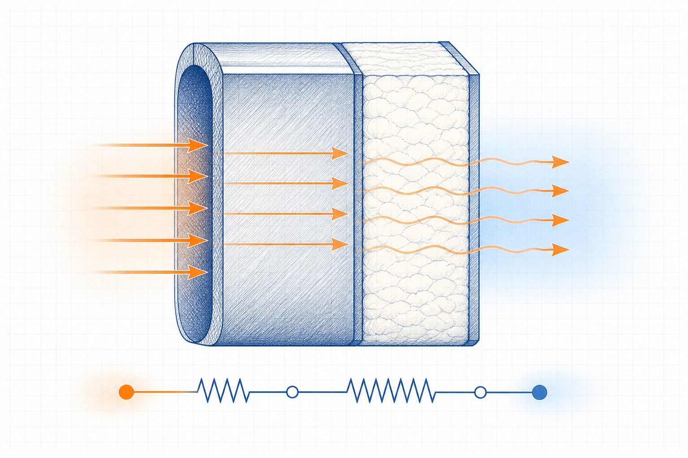
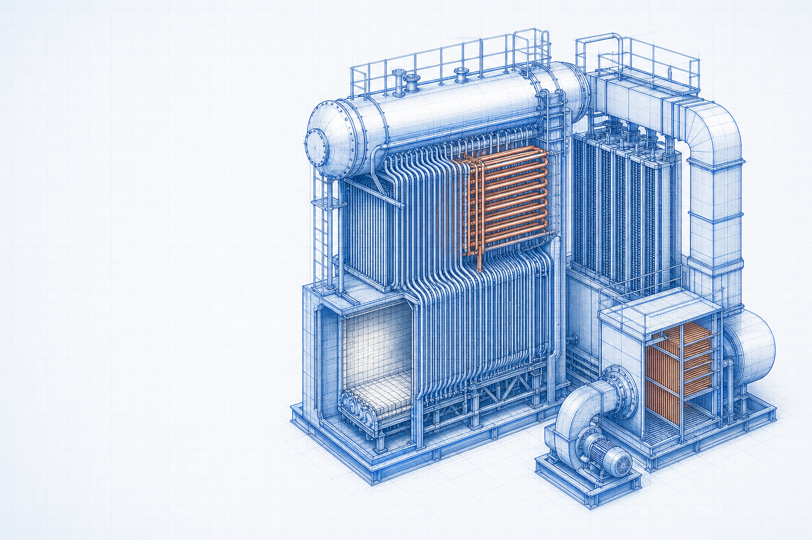

Engineering principle
Heat Conduction: Principles, Formulae and Industrial Applications
Heat conduction is heat transfer through a material driven by temperature difference. Thermal conductivity, geometry, contact resistance and boundary conditions determine the resulting heat rate and temperature profile.

- Content type
- Engineering principle
- Level
- Engineering › Thermal Engineering and Boilers › Heat Transfer › Conduction › Heat Conduction
- Audience
- Student · Design engineer · Project engineer · Plant engineer
- Last reviewed
- 30 August 2026
What Is Heat Conduction?
Heat conduction is the transfer of thermal energy through a stationary material or between material regions because of a temperature gradient. It occurs in solids, liquids and gases, although its engineering treatment depends on the material and geometry.
Why Is Heat Conduction Important in Engineering?
Conduction affects insulation design, equipment heat loss, furnace and boiler surfaces, heat exchangers, piping, structures and electronic equipment. The relevant thermal resistance may include several materials and contact interfaces.
Key Terms and Definitions
- Heat rate, Q̇
- Rate of heat transfer; SI unit W.
- Thermal conductivity, k
- Material property relating heat flux to temperature gradient; W/(m·K).
- Temperature difference, ΔT
- Difference between defined boundary temperatures; K or °C difference.
- Thermal resistance, Rth
- Temperature difference divided by heat rate; K/W.
Fundamental Principle
For a homogeneous layer under simplified steady one-dimensional conditions, heat rate is proportional to area and temperature difference, and inversely proportional to layer thickness. Real systems may also include convection, radiation and contact resistance.
Formulae, Symbols and Units
Fourier-law form
Q̇ = k A ΔT / L
For a plane layer, use k in W/(m·K), area A in m², ΔT in K and thickness L in m.
Layer resistance
Rth = L/(k A)
For the stated simple layer, use Q̇ = ΔT/Rth; combine resistances only when the boundary model is appropriate.
Unit consistency
A temperature difference can be expressed in K or °C because the interval is the same, but absolute temperatures are required for radiation relations. Keep length and area in SI units.
Assumptions and Validity Range
- Material properties are representative of the temperature range.
- The selected geometry and heat-flow direction fit the chosen relation.
- Boundary temperatures or heat-transfer coefficients are properly defined.
Factors Affecting Heat Conduction
Material conductivity
Higher conductivity generally gives lower conduction resistance for the same geometry.
Thickness and area
Greater thickness raises resistance; greater heat-transfer area lowers it in the simple plane-wall model.
Interfaces
Gaps, contact pressure, fouling and joints can add resistance not represented by bulk material conductivity alone.
Types, Classifications or Operating Cases
- Plane-wall conduction through plate, lining or insulation.
- Cylindrical conduction through pipe walls and insulation.
- Composite layers with series or parallel heat-flow paths.
Step-by-Step Engineering Method
- Define the geometry, material layers and heat-flow direction.
- Obtain temperature-dependent property values from an approved source.
- Select a steady or transient model with the required boundary conditions.
- Calculate resistance or heat rate with consistent SI units.
- Check surface temperatures, interfaces and safety requirements separately.
Illustrative Engineering Example
Hypothetical example — not a design calculation
A heated surface is separated from ambient air by a metal wall and insulation. The objective is to identify the conduction inputs before evaluating the complete heat-loss path.
- Record each layer thickness, area and conductivity at a suitable temperature.
- Calculate each conduction resistance on a consistent area basis.
- Add convection and other relevant boundary resistances before estimating total heat loss.
The example does not establish safe surface temperature, insulation specification or heat loss without a complete boundary-condition assessment.
Industrial Applications
- Industrial insulation and heat-loss screening.
- Equipment-wall and furnace-lining analysis.
- Heat-exchanger wall resistance evaluation.
- Pipe and vessel thermal-expansion studies.
- Thermal management of fabricated equipment and structures.
Common Mistakes and Limitations
- Using a single conductivity value outside its temperature range.
- Omitting contact or convection resistances.
- Mixing millimetres and metres in the thickness term.
- Treating a transient heating problem as steady without checking the time scale.
Frequently Asked Questions
What is thermal conductivity?
It is a material property that describes the ability to conduct heat under a defined condition.
Why is insulation thick?
Additional thickness usually increases conduction resistance, though geometry and boundary effects still matter.
Can two materials have the same thermal conductivity?
They can at a stated condition, but conductivity may vary with temperature, density, moisture and direction.
Technical check list
Before relying on this guide
Confirm that the calculation or selection is based on the actual service rather than a nominal description. Identify the current drawing and data-sheet revisions, the operating period represented by measurements, the unit and reference-condition basis, and the responsible person for each critical input. This prevents a valid principle from being applied to an incompatible boundary or outdated condition.
Questions for a competent review
- Does the selected method address the geometry, material, fluid, equipment arrangement and operating range in question?
- Have minimum, maximum, start-up, shutdown, upset, maintenance and future cases been screened where they could govern?
- Are the result, tolerance and rounding appropriate for the quality and uncertainty of the available input data?
- Are plant constraints such as access, isolation, inspection, utilities, controls, safety and environmental duty included in the decision?
- Is there a documented field-verification step before a design, procurement or operating change is approved?
If one of these questions cannot be answered, retain the limitation in the technical record and obtain the necessary evidence or specialist review. The value of an engineering guide is not merely a result; it is a transparent basis for a safe, traceable and practical decision.
Expanded technical guide
Engineering Context and Practical Use
Heat conduction is heat transfer through a material driven by temperature difference. Thermal conductivity, geometry, contact resistance and boundary conditions determine the resulting heat rate and temperature profile. Engineering reference articles should be used with a stated method, representative inputs, current drawings and qualified review for the actual service condition.
Define the physical and operating boundary before selecting equipment, interpreting performance or changing a set point. Consider normal operation, start-up, shutdown, minimum and maximum duty, maintenance condition, upset cases, seasonal effects and credible future modifications. A non-normal case can govern capacity, reliability, integrity, quality, environmental duty or safety.

Data and assessment basis
Define the boundary
inputs → equipment or system → outcome
Identify interfaces, reference points and the actual decision the assessment supports.
Use compatible data
result = valid method + representative inputs
Record units, service condition, source revision, material or fluid basis and uncertainty.
Check the limit
normal case ≠ governing case
Review the condition that controls capacity, reliability, safety, serviceability or performance.
Verify the result
assessment ↔ field evidence
Compare the conclusion with inspection, measurements, supplier limits and controlled documents.
Practical engineering method
- Define the duty, system boundary, required decision and applicable project or code basis.
- Collect current drawings, data sheets, service properties, operating trends and maintenance history.
- Set normal, minimum, maximum, start-up, upset and future cases that are relevant to Heat Conduction: Principles, Formulae and Industrial Applications.
- Select a method appropriate to the actual configuration and valid range.
- Review interfaces with utilities, controls, access, inspection, isolation and protection systems.
- Test important sensitivities where uncertainty could change the decision.
- Record inputs, sources, limitations, reviewer actions and field-verification requirements.
Operation, maintenance and reliability
Operating condition
Trend the parameters that reveal loss of duty, integrity, quality or environmental performance.
Maintenance access
Provide safe isolation, inspection, cleaning, lifting, spares and reinstatement for the actual arrangement.
Controls and safeguards
Check alarms, trips, interlocks and manual actions over the complete operating envelope.
Change management
Reassess after changes to material, load, fuel, layout, component, software, control or operating procedure.
Field verification
Use calibrated measurements at defined locations and comparable operating conditions.
Competent review
Escalate specialist, code, safety, environmental or supplier decisions beyond this educational scope.
Common decision errors
- Using an obsolete drawing, data sheet, property value or equipment limit.
- Mixing design, actual and reference conditions without a controlled conversion.
- Checking one normal case while missing the governing condition.
- Ignoring maintenance, access, isolation, controls or downstream consequences.
- Claiming precision greater than the evidence supports.
- Treating educational guidance as final design, safety, procurement or compliance approval.
- Failing to update the basis after a controlled change.
Lifecycle Evidence, Field Verification and Change Control
Heat Conduction: Principles, Formulae and Industrial Applications should remain connected to current evidence throughout its service life. Material variation, wear, fouling, corrosion, temperature, loading, contamination, control changes, maintenance practice and upstream process variation can change the basis on which equipment or a calculation was originally selected.
Maintain a usable evidence set
Record whether each important input is measured, calculated, supplier-rated, estimated or assumed. Retain the source, revision, date, units, reference condition, measurement location and expected uncertainty. This prevents a result from being compared with an obsolete data sheet, a different operating case or a measurement taken at another system boundary.
Use equivalent operating conditions when comparing field trends. Document production load, material or fuel condition, relevant pressure and temperature, equipment configuration, controls, instruments and maintenance state. A plausible trend can be misleading if these conditions are not comparable.
Check the actual governing condition
Review normal operation as well as start-up, shutdown, low load, maximum duty, dirty condition, maintenance bypass, upset, seasonal effect and credible future modification. The governing case may control capacity, reliability, integrity, emissions, quality, energy, electrical duty, serviceability or safety.
If reasonable uncertainty changes a decision, improve the evidence through inspection, representative testing, calibrated measurement, supplier confirmation, a controlled trial or specialist analysis. This is more valuable than reporting extra decimal places from an uncertain basis.
Turn maintenance into engineering information
Inspection findings can reveal local wear, leakage, buildup, cracking, corrosion, misalignment, overheating, abnormal vibration, control instability or loss of access that simple selection methods do not show. Record the location, condition, observed mechanism, action and follow-up result so future decisions use the actual service history.
Define the early-warning parameters, review trigger, responsible role and escalation path. Repeated alarms, manual intervention, rising energy, pressure loss, reduced capacity, dust release, unstable flow or recurring component damage should be investigated as system evidence, not reset as isolated symptoms.
Implement controlled change
Before changing material, equipment, layout, settings, controls, operating procedure or maintenance practice, check affected drawings, equipment limits, protective functions, isolation requirements, permits, training, spares and downstream interfaces. A local improvement can move a problem to another part of the system.
After implementation, compare measured performance with stated acceptance criteria at comparable conditions, update the controlled record and document any remaining limitation. This page is an educational reference; final project, code, safety, environmental, electrical and procurement decisions require qualified review with current site information.
Core engineering extension
Technical Basis, Interpretation and Engineering Limits
Heat Conduction: Principles, Formulae and Industrial Applications is a core engineering subject because it connects directly to how a system is defined, selected, analysed, operated or maintained. A correct result depends on a clear boundary, compatible data, an appropriate method and an understanding of what the method does not include.
Define conditions before applying a relationship
State the material or fluid, geometry, equipment configuration, pressure, temperature, load, flow, reference condition and operating point that each value represents. Distinguish design data from measured data, nominal ratings from actual performance, and a controlled specification from a preliminary estimate. A technically correct relationship can give an unsuitable answer when its inputs represent another condition.
Build the calculation or assessment from a transparent sequence: define the decision; identify the control volume or physical boundary; collect reliable inputs; state assumptions; apply a method within its valid range; compare the result with independent evidence; and record the limitation or next verification action. This makes the work reviewable and helps operators and maintainers understand what the result means.
Use dimensionally consistent data
Keep units, reference state and property basis consistent. Check whether a pressure is absolute or gauge, a temperature is suitable for the selected relationship, a density or property belongs to the actual material condition, a flow is mass or volume based, and a value is instantaneous, rated, average or maximum. Unit conversion is not merely arithmetic when reference conditions differ.
Where a method produces a precise numerical value, compare its likely uncertainty with the quality of the input data. Report a sensible number of significant figures and make clear which input has the greatest influence. If uncertainty could change a decision, obtain better field data or a specialist calculation rather than adding unsupported precision.
Connect theory with equipment behaviour
Real systems contain fittings, interfaces, fouling, wear, leaks, heat loss, bypasses, controls, vibration, access constraints and non-uniform conditions. Use field observation and maintenance findings to determine whether the simplified model still represents the installation. A difference between predicted and observed behaviour is evidence to investigate, not automatically an error in either result.
Review start-up, shutdown, minimum load, maximum duty, dirty condition, maintenance condition, upset and future modification. These cases can govern a different limit from normal operation and may require another method, another safety margin or a changed operating procedure.
Illustrative review approach
A practical review starts by comparing the intended duty with current measured behaviour, then checks assumptions, units, data source, boundary and interfaces. If the difference remains meaningful, inspect the equipment and process conditions, test the sensitive variables and identify whether the correct action is data collection, maintenance, operating adjustment, redesign or qualified specialist review.
Retain the calculation, source information, test record, limitations, reviewer comments and change history. This preserves the engineering basis through design, commissioning, operation and maintenance and prevents an educational guide from becoming an uncontrolled project instruction.
Expanded FAQs
What should be established first?
Establish the actual system boundary, relevant service condition, required decision and governing case for Heat Conduction: Principles, Formulae and Industrial Applications.
Why is normal operation not enough?
Start-up, low-load, peak, maintenance, upset and future cases can control different limits.
Which records should be retained?
Keep inputs, source and drawing revisions, assumptions, results, limitations, review record and verification evidence.
When should the assessment be repeated?
Repeat it after a material, equipment, route, load, control or operating-procedure change.
How should the result be checked?
Use inspection and calibrated measurements at the same boundary and condition basis.
Can this page approve final project work?
No. Final design, code, safety, procurement and compliance decisions require current project information and qualified review.
Why involve operations and maintenance?
They identify practical limits involving access, isolation, cleaning, reliability and actual behaviour.
What makes input data representative?
It matches the actual material, configuration, service, source revision, measurement location and operating condition.
What is an important limitation?
A simplified guide cannot include every site-specific geometry, degradation mechanism, safeguard or code requirement.
What should be reviewed after commissioning?
Compare performance, condition, alarms, losses, quality and maintenance findings with the documented basis.
How should unexpected behaviour be handled?
Verify the data and boundary, investigate the difference and follow the approved technical-review or change-management process.
Applied engineering review
Heat-conduction calculations: decision basis and field verification
Set the physical path, geometry, contact condition, material conductivity range, temperature-dependent properties and boundary temperatures before using Fourier-law resistance models. The governing heat path may include metal, insulation, lining, interfaces, fasteners or thermal bridges.
Evidence before action
Check dimensions, material certificates, installed insulation thickness, surface temperatures, ambient conditions, contact condition and process temperatures. Treat unverified interface resistance or wet insulation as an uncertainty rather than a fixed property. The technical record should show the source revision, unit basis, measurement location, operating mode and known limitations so that another competent person can reproduce the conclusion.
Review sequence
- State the decision that the assessment must support and establish the system boundary.
- Gather current drawings, data sheets, operating records, inspection evidence and applicable project or code requirements.
- Define normal, limiting, start-up, shutdown, upset and future cases that are relevant to the service.
- Use a method whose assumptions, property basis and validity range match the actual arrangement.
- Check the outcome against independent measurements, supplier information or physical evidence.
- Record sensitivity, uncertainty, actions, owner and any required follow-up measurement or inspection.
Limitations and safeguards
Important review points are burn protection, condensation, freeze risk, refractory integrity, thermal stress, insulation damage, vapour barriers and maintainability. This educational page supports preliminary understanding and does not replace a controlled design calculation, manufacturer instruction, safety study, statutory inspection or review by a qualified engineer.
Decision record
Before implementing a change, retain the governing case, key assumptions, source data, result, reviewer comments, verification plan and change-control reference. Reassess the conclusion when the material, geometry, operating condition, control arrangement, equipment condition or governing requirement changes.
References
- Incropera, F. P., DeWitt, D. P., Bergman, T. L. and Lavine, A. S. Fundamentals of Heat and Mass Transfer. 8th ed. Wiley. 2017.
- Çengel, Y. A. and Ghajar, A. J. Heat and Mass Transfer: Fundamentals and Applications. 6th ed. McGraw Hill. 2020.
This page is an original educational summary. It does not reproduce protected book text, tables, figures or standards material.